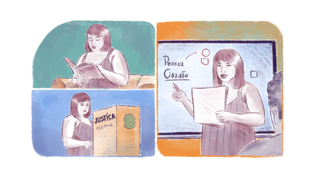

Educação e EPT na Constituição de 1988
Em relação à educação, além de existir como direito social no artigo 6º já citado, há um conjunto de artigos (205 a 214) que detalha os objetivos, a estrutura, a institucionalidade e o financiamento, que sofreram alterações em 1996, 2008 e 2020 – ou seja, momentos históricos distintos. A análise revela elementos progressistas convivendo com outros que nem tanto e, também, as marchas e contramarchas, demonstrando que, apesar do direito à educação ser cláusula pétrea, há a disputa quanto aos seus objetivos e a sua abrangência; da relação público-privado; dos direitos dos trabalhadores à educação e, ainda, do financiamento e uso dos recursos públicos, os quais estão sempre em debate, a partir da correlação de forças na sociedade.
Os artigos reforçam a ideia do direito a uma educação que pode ser entendida como integral, pois se refere à formação da pessoa, do cidadão e do trabalhador (art. 205). Além disso, o acesso à educação é definido como um direito público subjetivo, que não é prescrito a partir da idade.

Título: Educação integral
Fonte: Prosa (2024d).
O direito subjetivo é aquele em que ao sujeito, no caso qualquer cidadão ou cidadã, é dado o poder de exigir a garantia do cumprimento de um direito individual já previsto na legislação. (art. 206, inc. IX e art. 208, inc. I e § 1º da CF/88).
A organização e o planejamento da educação estão previstos nos seguintes dispositivos:
- Artigo 207: instituições de ensino superior públicas e sua autonomia;
- Artigo 210: conteúdos “mínimos” para o ensino fundamental;
- Artigo 211: sistemas e regime de colaboração entre União, estados e municípios;
- Artigo 214: Plano Nacional e Sistema Nacional de Educação.
Em relação ao financiamento e à relação público e privado (art. 209, 212, 212-A e 213), evidencia-se de um lado a ambiguidade e do outro a complexidade de garantir, repartir e utilizar os recursos públicos da educação.
Artigos selecionados da Constituição referentes à educação
Objetivos, direito e acesso
Art. 205. A educação, direito de todos e dever do Estado e da família, será promovida e incentivada com a colaboração da sociedade, visando ao pleno desenvolvimento da pessoa, seu preparo para o exercício da cidadania e sua qualificação para o trabalho.
Art. 206. O ensino será ministrado com base nos seguintes princípios:
I - igualdade de condições para o acesso e permanência na escola;
II - liberdade de aprender, ensinar, pesquisar e divulgar o pensamento, a arte e o saber;
III - pluralismo de ideias e de concepções pedagógicas, e coexistência de instituições públicas e privadas de ensino;
IV - gratuidade do ensino público em estabelecimentos oficiais;
[...]
IX - garantia do direito à educação e à aprendizagem ao longo da vida.
Art. 208. O dever do Estado com a educação será efetivado mediante a garantia de:
I - educação básica obrigatória e gratuita dos 4 (quatro) aos 17 (dezessete) anos de idade, assegurada inclusive sua oferta gratuita para todos os que a ela não tiveram acesso na idade própria;
II - progressiva universalização do ensino médio gratuito;
III - atendimento educacional especializado aos portadores de deficiência, preferencialmente na rede regular de ensino;
[...]
V - acesso aos níveis mais elevados do ensino, da pesquisa e da criação artística, segundo a capacidade de cada um;
VI - oferta de ensino noturno regular, adequado às condições do educando;
VII - atendimento ao educando, em todas as etapas da educação básica, por meio de programas suplementares de material didático escolar, transporte, alimentação e assistência à saúde.
§ 1º O acesso ao ensino obrigatório e gratuito é direito público subjetivo.
Organização e planejamento
Art. 207. As universidades gozam de autonomia didático-científica, administrativa e de gestão financeira e patrimonial, e obedecerão ao princípio de indissociabilidade entre ensino, pesquisa e extensão.
Art. 214. A lei estabelecerá o plano nacional de educação, de duração decenal, com o objetivo de articular o sistema nacional de educação em regime de colaboração e definir diretrizes, objetivos, metas e estratégias de implementação para assegurar a manutenção e desenvolvimento do ensino em seus diversos níveis, etapas e modalidades por meio de ações integradas dos poderes públicos das diferentes esferas federativas que conduzam a;
I - erradicação do analfabetismo;
II - universalização do atendimento escolar;
III - melhoria da qualidade do ensino;
IV - formação para o trabalho;
V - promoção humanística, científica e tecnológica do País.
VI - estabelecimento de meta de aplicação de recursos públicos em educação como proporção do produto interno bruto
Financiamento
Art. 212. A União aplicará, anualmente, nunca menos de dezoito, e os Estados, o Distrito Federal e os Municípios vinte e cinco por cento, no mínimo, da receita resultante de impostos, compreendida a proveniente de transferências, na manutenção e desenvolvimento do ensino
§ 3º A distribuição dos recursos públicos assegurará prioridade ao atendimento das necessidades do ensino obrigatório, no que se refere a universalização, garantia de padrão de qualidade e equidade, nos termos do plano nacional de educação.
Art. 212-A. Os Estados, o Distrito Federal e os Municípios destinarão parte dos recursos a que se refere o caput do art. 212 desta Constituição à manutenção e ao desenvolvimento do ensino na educação básica e à remuneração condigna de seus profissionais, respeitadas as seguintes disposições.
I - a distribuição dos recursos e de responsabilidades entre o Distrito Federal, os Estados e seus Municípios é assegurada mediante a instituição, no âmbito de cada Estado e do Distrito Federal, de um Fundo de Manutenção e Desenvolvimento da Educação Básica e de Valorização dos Profissionais da Educação (Fundeb), de natureza contábil;
§ 2º As atividades de pesquisa, de extensão e de estímulo e fomento à inovação realizadas por universidades e/ou por instituições de educação profissional e tecnológica poderão receber apoio financeiro do Poder Público.
(Brasil, 1988).
Além dos artigos específicos da educação, encontram-se, ao longo do texto constitucional, referências à formação de pessoas e categorias profissionais. A questão do trabalho vinculado à sua formação aparece em outras partes da Constituição: servidores públicos (art. 39, § 2º), trabalhadores da saúde (art. 200, inc. III), trabalhadores da cultura (art. 215, § 3º, inc. III e art. 2160-A, § 2º, inc. VIII), trabalhadores da ciência e tecnologia (art. 218, § 3º e 4º), trabalhadores rurais (art. 186), magistrados, militares etc. Curiosamente, embora seja mencionado o plano de carreira e os pisos salariais de docentes e de trabalhadores em educação, não há menção sobre a sua formação.
Merece destaque o reforço do direito à educação e à profissionalização da criança, adolescente e jovem (art. 227); o apoio às instituições de ciência e tecnologia (onde estão incluídas as redes federais, estaduais e privadas de EPT) e a formação de recursos humanos para as empresas na área de ciência, tecnologia e inovação (art. 218 a 219-B).
Artigos selecionados da Constituição referentes à Ciência e Tecnologia
…
§ 2º A pesquisa tecnológica voltar-se-á preponderantemente para a solução dos problemas brasileiros e para o desenvolvimento do sistema produtivo nacional e regional.
§ 3º O Estado apoiará a formação de recursos humanos nas áreas de ciência, pesquisa, tecnologia e inovação, inclusive por meio do apoio às atividades de extensão tecnológica, e concederá aos que delas se ocupem meios e condições especiais de trabalho
§ 4º A lei apoiará e estimulará as empresas que invistam em pesquisa, criação de tecnologia adequada ao País, formação e aperfeiçoamento de seus recursos humanos e que pratiquem sistemas de remuneração que assegurem ao empregado, desvinculada do salário, participação nos ganhos econômicos resultantes da produtividade de seu trabalho.
§ 5º É facultado aos Estados e ao Distrito Federal vincular parcela de sua receita orçamentária a entidades públicas de fomento ao ensino e à pesquisa científica e tecnológica.
§ 6º O Estado, na execução das atividades previstas no caput, estimulará a articulação entre entes, tanto públicos quanto privados, nas diversas esferas de governo
§ 7º O Estado promoverá e incentivará a atuação no exterior das instituições públicas de ciência, tecnologia e inovação, com vistas à execução das atividades previstas no caput.
Art. 219. O mercado interno integra o patrimônio nacional e será incentivado de modo a viabilizar o desenvolvimento cultural e socioeconômico, o bem-estar da população e a autonomia tecnológica do País, nos termos de lei federal.
Parágrafo único. O Estado estimulará a formação e o fortalecimento da inovação nas empresas, bem como nos demais entes, públicos ou privados, a constituição e a manutenção de parques e polos tecnológicos e de demais ambientes promotores da inovação, a atuação dos inventores independentes e a criação, absorção, difusão e transferência de tecnologia
Art. 219-A. A União, os Estados, o Distrito Federal e os Municípios poderão firmar instrumentos de cooperação com órgãos e entidades públicos e com entidades privadas, inclusive para o compartilhamento de recursos humanos especializados e capacidade instalada, para a execução de projetos de pesquisa, de desenvolvimento científico e tecnológico e de inovação, mediante contrapartida financeira ou não financeira assumida pelo ente beneficiário, na forma da lei
(Brasil, 1988).
Finalizando, o artigo 22, incisos I, XVI e XXIV, respectivamente, estabelecem que é de competência exclusiva da União legislar sobre o trabalho, sobre o sistema de emprego e exercício das profissões e sobre a educação. Isto significa que a regulação e respectivas normas valem para todos os níveis da Federação, enquanto prerrogativa do Estado, embora submetidos à governança dos sistemas estaduais e municipais. Assim, planos, programas, projetos e ações gerais e específicas, incluindo os respectivos planejamentos, acompanhamento, monitoramento e avaliação devem necessariamente seguir as regras nacionais.
.png)
.png)
.png)
.png)
.png)
.png)
Título: Estruturas da educação
Fonte: Prosa (2024e).
Embora a EPT não seja citada explicitamente como direito na CF/88, pode-se depreender que, ao se referir repetidamente ao direito das pessoas à educação e ao trabalho (direitos sociais pétreos) e aos processos de formação, capacitação, profissionalização e “qualificação para o trabalho”, o texto constitucional consagra a EPT como direito subjetivo. Neste sentido, exige políticas públicas permanentes, participação e controle social, legislação específica, formação de profissionais e financiamento público.
Resumindo, embora a educação seja entendida na CF/88 como direito social e subjetivo – que não prescreve com a idade –, as grandes contradições da educação brasileira estão presentes no texto constitucional, tanto os objetivos da educação quanto a tensão entre o público e o privado, além do compartilhamento das responsabilidades e dos recursos entre os entes federados. As sucessivas mudanças nos artigos referentes à educação expressam as lutas e debates na sociedade, cada vez mais acirradas, no contexto da reestruturação produtiva, da globalização excludente e da reforma do estado.